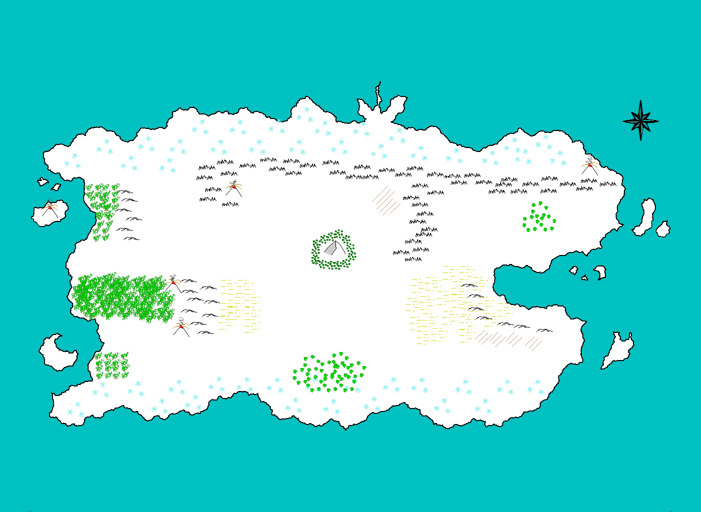
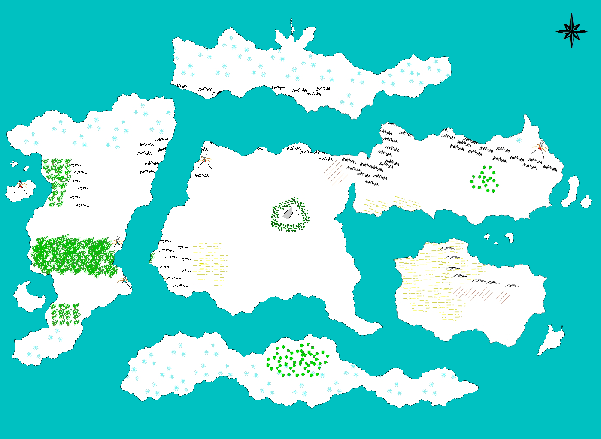

The Geography of Casarok
The planet is split fairly evenly between land and water at about 50% of the surface area for each. Practically all biomes exist on land from plains and forests to deserts and tundra. There are also wastelands on the land, areas of Casarok where few plants, ferals, or even anthros can survive. Underwater creatures live in separate biomes. For example there are sandbars, coral reefs, kelp forests, continental shelves, submarine volcanoes, and the extreme depths. Certain types of creature thrive in each type of biome.
The map of the world is split between pre-Cataclysm and post-Cataclysm. Before the Cataclysmic Age, there was only one landmass. The land formed one large Pangaea-like continent. After the Great Cataclysm struck, the landmass was split into the six continents: (from north to south) the Snowscape, Sequia, Centralia, Euraline, Phaerolis, and Frostland. Both maps, along with major landmarks in the world, can be seen below.
 - Origin Mountain: At the very center of the continent, it is the largest peak in the world. It marks 0-degrees latitude and 0-degrees longitude for all Casarokan cartographers. The mountain is home to some of Casarok's most dangerous creatures but is said to hold great secrets about the world.
- Eldwood Forest: The thick forest that surrounds Origin Mountain. Many dangerous creatures lie within, especially many hostile floradons. A powerful clan of owlbeast Aspects live here as well, guarding the forest from intruders.
- The Snowscape: The arctic tundra that covers all of northern Casarok. After the Great Cataclysm, it split off into its own continent. All creatures in this area of the world are adapted to the extreme cold that occurs during the winter months.
- King's Crown: The area of the Snowscape that has formed glaciers and fjords at the very northernmost point of the world. The very tip on the center peninsula is known as King's Crown Point.
- The Frostland: The antarctic tundra of southern Casarok. It became its own continent after the Great Cataclysm as well. A clan of frost dragons are said to live here that house the Great Library. The whereabouts of this landmark are unknown, but it is said to contain all the history of Casarok that was lost from the Pre-Cataclysmic Era.
- Breior Mountains: The longest mountain range in all of Casarok. It divides the Snowscape from the central and eastern parts of the world. Until modern times, it was very treacherous crossing over these mountains due to the sheer height and powerful creatures that inhabited some areas.
- Sha Zur Mountains: A smaller mountain range that extends south from the Breior mountains. It acts as a natural divider between central and eastern Casarok.
- The Firelands: A small wasteland area nestled in the corner between the Breior and Sha Zur Mountains. Very few creatures live here, but some dracammas and salamander Aspects can live in this area for example.
- Mount Coreptus: A large volcano that marks an area of high volcanic activity at the western end of the Breior mountains. It is said to have been a major catalyst in the Great Cataclysm. The area around this mountain is home to a strong clan of dracammas.
- Acaraho Mountains: A small mountain range in western Casarok. A lush rainforest sits between the mountains and the ocean that is known to be some of the best hunting grounds on land.
- Khulu Jungle: A tropical jungle in central western Casarok. It is the largest such area in the world.
- Cat's Head Island: A large island that sits in the cape of southwestern Casarok. It is a mostly peaceful area, and many anthros call this place home.
- Escanina Islands: A small chain of tropical islands in central eastern Casarok. The largest of these islands is known as Crescent Island. The name was given to these islands because of the large canid population that lives there.
- The Sandsprawl: The largest desert in Casarok, located in the southeastern portion of the world. After the Great Cataclysm, it spread out and became an even larger part of Phaerolis. Despite the harsh environment, it gave way to some of the strongest empires in the world.
- The Deadly Steppes: The wasteland area near or surrounded by the Sandsprawl, depending on the time in history. It is said to be one of the deadliest areas in all of Casarok. Extremely few creatures can survive the harsh environment.